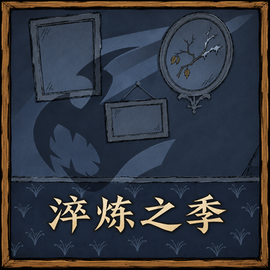

高额增伤逐渐递减；普通伤害和位面伤害分别计算，普通角色的普通增伤逐渐趋近4倍。
淬炼之季 WIKIv2.8.15.0.25

欢迎来到淬炼之季
淬炼之季是《为爽而虐》的二改模组。这里记录当前版本的角色改动、道具用途、建筑功能与 Boss 机制，也整理了各项配置的默认值和生效条件。第一次游玩，可以先从新手入门了解模组。
百科词条
没有匹配的词条，请调整搜索或分类。
近期实际掉血超过最大生命20%后逐渐减伤；停手1秒后，压力每秒至少消退400点生命对应的额度。
本体以外的第二个敌人：分身数量、生成范围与再生规则。
随机大小同时影响生命、伤害、可见体型与部分掉落。
核心开关的默认值、生效条件与旧存档设置。
为爽原版、咸鱼版与暗影枢纽的使用规则，以及旧库存恢复。
容器可整理、收集同类物品，也可用快捷键在库存与容器之间存取物品。
阿比盖尔、伯尼、切斯特与哈奇各有专门的分身交互。
区分本体转移仇恨、分身共享目标和距离回收。
弱化分身的生命、伤害、体型和攻击频率，并为部分 Boss 使用单独规则。
按实际技能节点计算上限，避免满树后继续积累溢出经验。
韦伯、沃特、芜猴和其他符合条件的怪物角色共用一个夜视开关，沃托姆另有回声视觉优化。
可单独关闭维希的幽闭恐惧。弹弓困难规则由维希自己的开关控制，与沃尔特分开判定。
与永不妥协一同使用时，保留沃尔特的原版弹弓、改装弹弓和弹药袋功能，并可另行开放维希弹弓。
旺达的停止衰老、老年门槛和不老表回温分别设置。恢复险境仍会减半重伤期间的治疗，但不会在年龄结算时再次减半。
威尔逊
常用称呼 威尔森、科学家
掌握新科技后，威尔逊会随世界天数获得攻击、防护与召唤能力。
薇洛
常用称呼 火女、纵火女
薇洛能把火焰留在换下火把后的武器上，并借余烬、狂热和伯尼作战。
沃尔夫冈
常用称呼 大力士
沃尔夫冈能用食物补充力量，饱食时保持力量，强壮状态下战斗会加速。
温蒂
常用称呼 鬼女、幽灵女孩
温蒂的普通攻击恢复正常倍率，阿比盖尔获得成长保护和更多药剂用法。
WX-78
常用称呼 机器人、WX78、WX 78
WX-78可融合电路、吃齿轮增加上限，并通过电路搭配获得防水、控温和超载。
薇克巴顿
常用称呼 老奶奶、图书管理员、薇克伯顿
薇克巴顿能随身打开书柜，用莎草纸修书，并把读书与科技进度转为战斗能力。
伍迪
常用称呼 伐木工
伍迪可以自行控制满月变身，用饥饿维持兽化，并主动变回人形。
韦斯
常用称呼 小丑、默剧演员、维斯
韦斯的气球可堆叠、缠住目标减速，也能消耗气球制造旋风。
麦斯威尔
常用称呼 老麦、麦克斯韦、Maxwell
麦斯威尔可通过暗影装备解锁突刺，受到攻击时隐入暗影，并用右键自身施放睡前故事。
薇格弗德
常用称呼 女武神、维格弗里德
薇格弗德能用食物补充激励，通过重奏修复装备；充能奔雷矛则受独立消耗规则影响。
韦伯
常用称呼 蜘蛛人、蜘蛛男孩、小蜘蛛
韦伯可以靠自己吃肉招募蜘蛛，吃变身涂鸦批量改变普通蜘蛛，并携带专用蜘蛛容器。
薇诺娜
常用称呼 女工、女工人
薇诺娜可制作工具箱、改造电气照明并解锁 200% 过充；制作增强保留永不妥协的工作能力。
沃利
常用称呼 厨师、大厨
沃利的食物收益、重复进食和随身锅分别由独立选项控制，每日烹饪可返还一份材料。
沃尔特
常用称呼 童子军、小童子军
沃尔特保留原版和改装弹弓，与永不妥协同开时另有独立的圆形玻璃弹配方。
沃拓克斯
常用称呼 小恶魔、恶魔人、恶魔、沃托克斯
沃拓克斯能储存大量灵魂，以灵魂作远程武器，并在三项属性充足时提高近战伤害。
沃姆伍德
常用称呼 植物人、树人
沃姆伍德可以让收获后的作物重新发芽，吃指定食物长出临时装备，并借荆棘与食物增益作战。
沃特
常用称呼 鱼妹、鱼人妹
沃特可以边吃东西边招募鱼人、延长忠诚，并用鱼向普通鱼人交换材料。
旺达
常用称呼 表姐、钟表匠、旺妲
旺达的年龄、钟表、右键倒走和自我复活分别可配置；恐惧—警告表由独立选项开启。
芜猴
常用称呼 猴子、猴人
芜猴可作为开局角色，召来海盗猴帮手，并用食物替自己或喂食者解除诅咒。
沃托姆
常用称呼 Wathom
沃托姆的能量停留时间延长，激活后的攻击与承伤可以选择两个档位。
维希
常用称呼 Wixie
维希的幽闭恐惧和弹弓困难调整各有独立开关，不随沃尔特开关一起变化。
武器、角色和勋章技能保留普通右键；发生冲突时用 Ctrl＋右键选择淬炼技能。
简单强化与困难险境可同时启用；独立功能另按自己的入口执行。
分别按生命、饥饿和理智的原始数值计算倍率。默认选项降低正收益，并增加负面食用效果。
作物生长各阶段按所选倍率延长，默认 2 倍。应季加速和照料条件仍按作物原有规则计算。
植物再生与动物繁殖分别使用两个倍率，默认都为 8。首领重生、亮茄和青蛙雨另有计算。
普通种子默认有 80% 概率长成杂草。种子食用饥饿值降低，符合条件的腐坏种子会变成不能种植的干种子。
用对应原料修理装备；建造护符还能协助修复远古装备。
可把生食材放到正在燃烧的物体上烤熟。一次处理一件，产物沿用食材原有的烹饪结果。
艰苦原型为九种科技建筑追加材料。锯马加入齿轮后可直接制作，其余建筑保留原来的解锁条件。
进入世界时，自动拾取身边无主的眼骨等不可替代物品。
幸运带来的额外成功概率只保留四分之一，原有的基础概率不变。
使用快捷收集或存放转移物品时，每次成功转移消耗 0.2 饥饿值。
角色科技、附近制作站和临时科技按最高值计算。万物百科增加到三次制作机会，但借临时科技制作不会永久学会配方。
档案馆解谜失败后，星象探测仪会移动正确踩踏位置，土地夯实器会改变踩踏顺序；踩错不再只回退一步。
帐篷与睡袋按当前生命、理智比例决定是否继续恢复。用瞌睡袋升级后，可恢复到上限。
困难模式的食物总开关管理食用数值、燃料烹饪、农业、动物与鱼鸟行为；各分项还需分别开启。
普通锅和便携锅需要燃料，龙鳞火炉能为附近的锅供火。较高档还会削减食材度，并把锅改为五格。
容器里的活物会找食物，能移动的动物会逐格接近。鱼没有食物时，还可能吃掉较轻的其他鱼。
扩大生命损失、降低治疗，并改变制作代价和上限恢复。
受伤时同步理智，吃撑也有代价。
饥饿上限会受惩罚，并可用食物或强心针逐步恢复。
食物正收益分段恢复，受击后进入10秒恢复折扣。
常驻减伤与Boss连击易伤同时存在。
玩家阵亡会为附近首领回复生命。
直接点选玩家攻击仍受房间规则限制，道具和随从可能造成误伤。
限制重复战斗随从，而非所有跟随物。
第11天后，每10天为配方材料产生固定的随机变化。
改变真正的昼夜阶段，不只是旋转时钟图案。
重复料理影响理智，喜爱料理保留额外收益。
骑乘挨打消耗饥饿，连续冲刺可能进入疲劳。
允许打断后摇移动，但不因此提早下一次攻击。
退出连接后角色仍暂时留在世界。
复活占位诅咒与诅咒饰品导致的说话变化。
幽灵也有生命与环境风险。
棱镜盾反改为短暂承伤减免。
让更多角色使用力量系统，两档区分使用与制作权限。
首次领取角色初始物品时获得两颗小糖豆，部分加入日期另有生存装备。
采摘、挖取和敲碎资源时可能引来敌人，完成工作才进行对应判定。
中型和成熟多枝树可直接采摘，采后退回幼树阶段。
持续击杀会积累物种灭绝进度；未灭绝前每天缓和。
把常规探索地图改为受标记与额外解锁条件控制。
该选项会同时影响控制台、回档和重新生成世界。
季节顺序、月亮风暴和连续恶劣季节共同影响世界温度。
缩短黄昏和两种经典黑暗模式。
天体启迪后仍保留月相变化，并配置哪些月相具有夜间光照。
蚁狮沙漠的沙尘暴不再只限于夏天。
月岛矿区、满月风暴与分类型风暴防护。
降水规模与玩家淋湿速度分别增强。
夏季短时风暴和特殊风滚草。
冬季黄昏、夜晚和洞穴中的冷光源，以及可选雪球降雪。
通过远古档案馆改变季节，默认消耗三颗彩虹宝石并进入满月。
目标受到的 Boss 伤害越多，死亡时保留的掉落越少。
额外属性单独调整生命、移动、伤害和攻击频率。提高 Boss 血量时，通用掉落按（1＋血量倍率）÷2 增加。
四个容易误读的防御比例，以及掉血上限、恢复和状态免疫。
动作快慢与两次攻击之间的间隔不是同一个数值。
生命、伤害和护甲随世界天数线性增长，各自独立配置。
三项简单模式植物功能：采树枝、留下枯草根、把杂草产物种回去。
远古区域的巨石枝幼苗需要铥矿启动生长，成熟石树最后一击需要强力开采。
保暖隔热扣值、更早的冷伤热伤，以及暖石和环境温度联动。
沉底奖励、猴岛海盗、藏宝图与船上火坑共同改变航海收益和风险。
生成时重排地表岛屿和洞穴连接，开启后不会把已有地图直接重造。
两套生成位置和再生条件，默认采用开局垃圾堆守卫。
月相重新分配可用通道，火药、钥匙和灵魂提供额外通行办法。
敲击触发随机远古法术与影怪，宝石颜色决定附加反应。
低理智制作可能损坏祭坛，高理智只保证完整祭坛的对应分支安全。
实际通过玩家采矿效率改变所需工作量，而非给每块矿石直接加生命。
裂缝持续耗水耗肥，夏季缺水缺肥时可毁掉作物和耕地。
每季随机一株参考作物，把它的养分收支附加到田地养分循环。
怪物分类总开关控制专属强化与装甲加载，旧传统档和当前默认档分别运行。
双模组同开时，修补工具包、滑行手杖、月鳞甲、厨师袋及灵魂万灵药的实际变化。
从自己物品栏选中另一件手部装备时，旧手持物进入这次选中物品腾出的格子。
选择暗影枢纽后，主世界托管各层空间；暗影和钓具能跨层同时存取。
两套独立的生存挑战，默认关闭；子项只有在各自总开关开启后才生效。
选择暴风雪与龙卷风雨溅的显示密度，了解淬炼补丁的作用和适用条件。
死亡饥饿上限的显示与恢复，以及档案馆秋季复苏的地表／地下同步。
可用龙鳞皮和蘑菇皮分别升级的连锁电击炮塔，倒下后休养五天；攻击 Boss 时伤害另乘 0.33。
捕兽陷阱触发时立即判定捕获，不再等收拢动画播放完毕。
消耗霜冻核心改造的冰魔杖。攻击一次后损坏，命中的目标会在 16 分钟内反复受到冰冻。
以天体珠宝升级的亮茄剑，攻击附带月火；右键可施放月火斩，跃击一片范围内的敌人。
携带升级后的熊獾桶，并在桶内放够 40 份指定料理或调味料理，即可持续获得对应增益。
恶液储存箱套件除了建造储存箱，也可消耗 1 个，为其他容器提供永久保鲜。
用附身暗影心房升级魔术师帽后，可从帽子的暗影空间进入自己的 20 格私人储物空间。
给予原料可批量精炼；给予已学会制作的成品，可用身上的材料继续制作。齿轮可提高每次加工的数量。
用材料交换另一种材料，齿轮可增加每次兑换份数。等级达到 30 后，可兑换纯粹辉煌、绝望石等材料。
将物品拆回制作材料。初始回收一半，交付绿宝石后可提高到 75% 和 100%；耐久与鲜度仍会影响回收数量。
给予 4 个噩梦燃料，可暂时使用暗影魔法与暗影工具；成功给暗影秘典补充燃料，可以延长能力期限。
交付符合蚁狮贡品条件的物品，换取沙之石或石头。铥矿可增加每次处理的物品数量，也可在配置中把交易移到懒人传送塔。
默认提供 20 格共享储物空间，可存料理、种子和钓具。配置也可切换为活鱼交易，兑换海带叶、种子、玩具等物品。
用成品和 1 张莎草纸制作已学配方的蓝图，也可用莎草纸复制身上的蓝图、食谱卡和草图等纸制品。
消耗 1 个沙之石让传送塔保持激活；站在塔旁使用沙之石时，可用站位选择传送方向。停止激活会返还用于激活的石头。
四格食材可批量做饭，另有红宝石槽供非沃利角色制作主厨料理；也能批量烤熟食材，烹饪时加入燃料可缩短等待。
两种蘑菇灯都会缓慢恢复内部物品的新鲜度，并扩大照明范围；建筑不再燃烧，也不阻挡移动。
晾肉架可把 21 种生植物晾成蔬果干，耗时 120 秒。蔬果干不会腐败，食用可减轻 3% 的生命上限惩罚。
使用假人交换装备时，也会交换当前没有战斗目标的战斗随从。可携带的活体随从还能收入假人的 20 格物品栏。
兼具斧、镐、铲、锤、锄、船桨和钓竿用途的远古工具。
戴上头盔，放入工具或材料，就能边走边种植、工作和捕捉。
用注能月亮碎片或纯粹辉煌注能，获得远距离挥砍和右键跃斩。
暗夜剑提升为 75 伤害、150 次耐久，可用纯粹恐惧和绝望石注魔。
铥矿棒可格挡，三件铥矿装备可在洞穴绝缘。守护者之角还能强化魔光护符，让它在背包中照明、提速和回理智。
鳞甲至少吸收 80% 普通伤害，缩短冻结时间，并防止刚解冻就再次冻结。
暗影香炉可汲取附近影怪的生命，补充自身燃料并修理骨头装备。
骨头头盔损坏后保留，可用噩梦燃料修理，并驱使附近影怪攻击敌人。
放入孢子调节保暖、防水和绝缘；装满天体珠宝后提供 95% 护甲吸收。
给普通火把使用后期材料，制成亮茄火把、辉煌火把或绝望石火把。
月熠可储存在奔雷矛或晨星锤中；晨星锤还可用约束静电充能。
蜂王冠提高到 2000 耐久，可用蜂产品修理，也可消耗帽子变成蜂巢。
把清洁扫把交给科技建筑，让扫把接受该建筑支持的材料交易。
检查随身携带的视界扩展器可切换远视；用护目镜升级后还能抵挡风沙。
拾荒尖帽提高到 840 耐久，受到近战攻击时反击 23 伤害，损坏后可修复。
眼球伞在雨雪中恢复耐久，佩戴时根据体温提供树荫庇护。
恐怖盾牌能捕虫、汲取敌人生命，并在耐久不足时消耗主人的饥饿或生命自修。
给已绑定的牛铃一颗橙宝石，即可召回坐骑。牛死亡后，240 秒按保存的状态复活。
把暗影心房丢到船上升级。此后可用船舵接管航行，并通过船上走位控制方向。
消耗一个弹性空间制造器，可让便携容器内的物品无限堆叠，并使容器防火。
保险杠会自动修复；被击毁或锤下后留下破损套件，等待或投入石料即可再次使用。
犬牙陷阱与荆棘陷阱各可触发 20 次，触发 5 秒后自动重新布置。
钓具箱和超级钓具箱可收纳角色专属道具，箱内蜘蛛、孢子不再随时间腐坏。
幽灵可直接作祟告密的心复活；心放在箱内时，先作祟箱子将它取出。
自己煮好的料理还在锅里时，给锅一张莎草纸即可记录本次食材。
毛皮铺盖、帐篷和遮阳篷可用睡袋升级，耐久翻倍、每天恢复 1 次，并可全天使用。帐篷还支持多人同时休息。
消耗一个守护者之角附魔手杖。持续步行可额外加速，检查装备可切换撞击。
用蜘蛛腺体等治疗物品把怪物肉转为普通肉。成功率取决于治疗量和肉的负面生命值，失败也会消耗治疗物品。
火腿棒可补肉增重，也能右键啃食；重量、新鲜度和污染共同决定伤害。
便携调味站可同时放入整组料理与调料，按较少的一组批量制作。每份仍各消耗 1 份料理和调料。
码头套件可铺在洞穴边缘的虚空上，向外延伸可行走地面。默认每次换日损失 100 点耐久，也可关闭自然损毁。
泰拉箱子的无限堆叠彩蛋需要关闭拾荒疯猪加强；升级普通箱子和龙鳞箱后，拆除掉落表会改为弹性空间制造器。
与永不妥协同时启用时，调整部分装备、容器及鼠潮规则。补丁默认开启，旧版三个启用档统一视为开启。
把未安装的甲板照明灯戴在头上，获得大范围照明和少量防水。
开启月后影后装备增强后，现有裂隙装备直接获得以下效果，无需追加材料。
头盔快速获得 1.3 倍攻击增益；护甲平时加速 15%，战斗追踪时提高至 30%。
极地熊獾桶可收纳更多有新鲜度的物品，并缓慢恢复内容物的新鲜度。
放入独眼巨鹿眼球后，结晶器每 10 秒推进附近植物的生长，每分钟为耕地补水和三种养分。空结晶器也能阻止附近被选为新的亮茄寄生点。
暗影锤可通过首领击杀升至四级；连续命中叠加恐惧缠身，满五层使目标承受双倍伤害。
绑定后即可收起坐骑；牛死亡时可用充能完毕的牛铃复活，冷却为 240 秒。
闭合的飞翼风帆可用短动作展开；同时开启困难模式时，制作额外需要两根邪天翁羽毛。
所有角色都能用两块暖石和一根树枝制作热铃，携带后可储存热量或冷量。
暗影化的大门需要 1 个彩虹宝石净化。净化永久生效，默认同时召来四只暗影生物；月岩雕像、伯尼与暗影秘典的配方也会追加彩虹宝石。
捆绑包装只需蜡纸，包裹仍可保鲜；礼物包装拆开时会补算封装期间的腐坏。
击败大霜鲨后可用海鱼交换出逃腿靴。开启大霜鲨加强时，奖励改为永恒出逃腿靴，并额外获得霜冻核心和寒霜之祠蓝图。
部分生物生成时会获得远程攻击或一种属性能力。两项概率独立判定，默认均为 7.5%。
受阻的怪物可以破坏障碍或暂时穿过碰撞。经典档改为主动寻找附近的墙。
默认关闭。开启后，双方都带有巨兽标记时，通常不能互相选为攻击目标或造成战斗伤害。
近期受击的生物更难被火焰和电击打断。无端仇恨另行决定无来源攻击后的寻敌。
蝙蝠、青蛙、洞穴蠕虫、蛞蝓龟和伏特羊在攻击起手时继续前移；部分生物还有额外能力。
飞行生物的近战命中玩家时，通常只计算头部与手部装备的防护。
杀人蜂首次交战时能发射直线吹箭。果蝇王召唤更多果蝇，小果蝇在攻击间隔中退开。
猎犬丘容纳更多猎犬。四个档位分别调整体型、生命和移动攻击；附身座狼另有影火分支。
成年海象生命提高至 800，可跨海追击；完整强化会让每处营地出现两支狩猎队。
完整发条死亡后变成损坏发条，损坏发条再留下装置。它们会逐阶段修复，并能积累电荷。
触手命中后能用荆棘围住目标，受击时召出树根。杀死蜗牛类生物后，还会持续回血。
清空巢内蜘蛛后，巢穴会降级并叫出白蜘蛛。蜘蛛女王能进食、跟随喂食者，并消耗饥饿值产下随从。
猪人和兔人可以接收手持装备，猪人遇到有害喂食会反击。梦魇疯猪每次从疲惫中起身后，动作会进一步加快。
水獭会飞扑食物持有者、连续攻击并增加玩家潮湿度。击败后能获得肉、鱼和随机海上物资。
岩石大白鲨跃上陆地或船时可以立即攻击，结束吞食动作时还会再咬一次。
普通穴居猴会盯上携带素食的角色；粪便能够造成伤害。暗影猴受击时会带附近同类一起后撤。
坎普斯带一火一冰两只猎犬出现，并在生成 60 秒后离场。纵火增加淘气值，重新登录也会保留已记录的数值。
亮茄在残血时更换寄生对象，藤蔓随之增多。食人花、眼球草及部分种植建筑也受此项影响。
无畏墨荒可以连续冲撞，飘渺墨荒的法弹会弹射，狞笑墨荒会吞下同伴回血。熔合暗影与暗影裂隙另有传送、黑雾和吸引效果。
爬行恐惧与爬行梦魇的生命提高到 400，可以恢复自己和附近暗影生物，并在死亡时升起暗影柱。
恐怖尖喙与梦魇尖喙会突刺、伪装成影子，并在死亡后留下陷阱。默认档的突刺还会击落手持物或头盔。
恐怖利爪可以发射暗影吹箭，并在受伤后制造击退波纹。波纹可打断，船上的玩家也会被影响。
潜伏梦魇会从三个方向夹击玩家，为暗影同伴附加旋角，并在死亡后留下环绕尖角。默认档还包含加速、击退和双生形态。
低理智玩家可能招来最多三只寄生暗影。它们跳扑时直接扣除三维，成功吸取后不再掉落噩梦燃料。
巨荒蜈蚣死亡时可分裂成两条较短的蜈蚣。每条新蜈蚣有独立的完整生命，分裂开关不依赖墨荒加强。
拟态蠕虫会复制地上的装备，在使用时露出原形。当前“拟态蠕虫”开关没有执行界面所述的额外复制限制。
树精会在敌人脚下种出伤人的树苗，濒死时换树恢复。同种树精中一只死亡，其余会一起变回树木。
生命翻倍并免疫冰冻。普通巨鹿在低血量受击时可能获得寒冰护甲，晶体巨鹿另外增加冰墙与远距离拦截。
战斗中增加近身击退、钻地、追踪沙之石和沙尘暴。生命低于 80% 后开始钻地，低于 40% 时会额外重置一次钻地。
普通熊獾增加远程爪击；装甲熊獾还会释放催眠云、孢子云，并从奔跑衔接转身坐地。
增加远程火球。半血后进入持续狂暴，免疫冻结、催眠和击晕，并召唤会释放火阵、为本体回血的星。
蜂王命中玩家后会施加短暂的蜜蜂过敏。蜂王冠和吃过蜂王浆的角色，还能提高自己追随者的普通伤害。
邪天翁会连射冰羽、俯冲追击，并在船只附近升空后砸落。击败后额外获得羽毛帆布桅杆。
克劳斯会随生命降低改变连击和鹿群队形，并击落背包物品。赃物袋增加三组奖励，坎普斯背包列入本体必掉物。
帝王蟹有新旧两套战斗。新版围绕炮塔、冰面和追击蟹钳展开；旧版保留守护蟹钳回血、炮弹反弹与下潜攻击。
大霜鲨的寒息会叠加减速和冰冻，钻地留下冰裂隙。首次击败可获得霜冻核心和寒霜之祠蓝图。
暗影棋子会释放陷阱和暗影柱，随生命阈值召唤影怪。二、三级棋子还可能切换形态，战车可连续冲击。
恐怖之眼与双子魔眼的生命翻倍，冲锋、召唤和转移目标更加频繁。双子中一只的召唤间隔单独改为 4.5 秒。
拾荒疯猪更早使用多种武器，半血前即可连续翻找装备。激光炮不再受月亮裂隙进度限制，击败后追加多种废铁装备和蓝图。
毒菌蟾蜍会连续引爆蘑菇，毒雾随季节附带冰冻、灼烧、电击或催眠。所有蘑菇帽与两种蘑菇灯蓝图列入追加必掉奖励。
天体英雄有五档加强。默认时停档在三阶段加入冰火激光、诅咒和持续失血，击败后必掉天体洋葱。
天体后裔会在冲刺时喷射冷火，影子重击改为两轮扇形雷击。连招随生命降低解锁，本体与影子同步战斗阶段。
远古守护者默认使用骨牢版：受击会落下骨刺，第二阶段能围住玩家。攻击命中会削减理智及理智上限，撞柱还会获得暗影魔法。
远古织影者会更频繁地布置骨笼和召唤暗影。默认档还能制造玩家的敌对影子、招降影分身；同一轮鬼手不能一直用同一种攻击拆除。
被虚影附身的巨鹿、熊獾和座狼能与影分身交换位置和生命，倒地时还可将伤害转给分身。清理分身会直接影响战斗进度。
黑寡妇条目用于联动永不妥协。淬炼之季调整跳跃、蛛网与开茧工具；正式版和测试版采用不同的兼容分支。
符合条件的生物有概率获得一次半血护盾。护盾持续 5 秒，拦截普通战斗攻击；它不是可制作或掉落的盔甲。
给予普通猪人紫宝石，可将它变为携带火腿棒和橄榄球头盔的猪人 Boss。击败后额外掉落 1 个彩虹宝石。
简单模式下，格罗姆可捕食附近昆虫。每次进食会回满生命，并推进黏液生产。
鸟类生命提高至 100。攻击不同鸟类会受到不同反击；给笼鸟喂食也会改变它的生命。
海鱼会挣脱手持格、跳回海中；季节鱼还会反击。处理鱼时有机会获得宝石、诅咒饰品或瓶中信。
普通牛铃需至少 10% 驯化度才能绑定。已有主人的牛会拒绝玩家武器、幽灵和阿比盖尔造成的部分攻击。
追踪大象可能遇到混合象群。大象会灭火，重伤时向敌人投出五枚水弹；沼泽中的追踪目标会改成钢羊。
大霜鲨产出的冰冷核心，可加强容器保鲜、制作寒霜之祠，也能升级冰魔杖。
用海鱼兑换出逃腿靴，并能改造腿靴、升级冰杖和冷却物品的建筑。
携带时防滑，使用后自行恢复次数；可将多个永恒腿靴合并，最多储存 5 次出逃。
普通出逃腿靴经寒霜之祠改造后得到。随身携带即可防滑，也可消耗它建立海上漩涡。
安放玩家灵魂后，可以种植作物和杂草的墓穴。分阶段给予哀悼荣耀，可培育巨型作物。
用空瓶收集玩家身后留下的灵魂，交给哀悼之穴，便可留下以该玩家命名的墓穴。
旺达专用的恢复怀表，最多储存 3 次使用次数，用完后会自行充能。
以攻击积累冲刺次数的武器。右键冲刺会带动上次攻击的目标，并额外造成 30 点伤害。
在辉煌铁匠铺制作，也可由时停版本天体英雄掉落。吃下后永久获得月光积层与月灵反击能力。
不会腐坏的甜食。吃下后持续 4 分钟缓慢恢复生命与理智，普通食用获得的效果会被受击打断。
蝙蝠鼻、胡萝卜和蜂蜜做成的甜食。祝福持续 4 分钟，开启猪人加强后可避开普通猪人的主动索敌并与猪王交易。
用四种季节海鱼烹制，吃下后获得 16 分钟移速提升、干燥、体温调节与照明。
生蔬果可放上晾肉架，基础晾晒时间 2 分钟。干菜不会腐坏，每吃一份恢复 3 个百分点的生命上限惩罚。
薇诺娜制作的随身工具箱可收纳原有工程材料，并额外收纳斧头、镐和铲子等工具。
用套件改造三种照明装备，再由薇诺娜穿戴并触摸发电机，为每件装备解锁最高 200% 电量。
与永不妥协同开时，用独立配方恢复沃尔特的圆形玻璃弹；不与维希的尖刺玻璃弹混用。
模组是什么、从哪里订阅，以及第一次开荒前需要了解的事。
设置不生效、穿越等待、夜视和旧版本说明。
版本范围、资料依据、维护与原作者署名。
默认值、实际档位、上级开关与异常说明。
查看房间实际配置，管理聊天区按钮和更新提示。
按本模组实际生效配置与默认设置比较，私下显示简单、默认、困难或地狱。
角色技能、体型掉落与穿越恢复
深埋之下饥饿上限与秋季复苏兼容
历史日志保留当时说明；当前机制以相应词条和房间配置为准。
薇诺娜电气改造、过充与工作修复
历史日志保留当时说明；当前机制以相应词条和房间配置为准。
圆形玻璃弹、天体同步与妥协运行优化
历史日志保留当时说明；当前机制以相应词条和房间配置为准。
牛铃、法杖、腿靴与月火斩修复
历史日志保留当时说明；当前机制以相应词条和房间配置为准。
模组五格锅兼容与影子转化修复
历史日志保留当时说明；当前机制以相应词条和房间配置为准。
五格锅与智能料理预告
历史日志保留当时说明；当前机制以相应词条和房间配置为准。
蝙蝠分身与魔术帽保存回档修复
历史日志保留当时说明；当前机制以相应词条和房间配置为准。
刮地皮头盔、睡眠与手部换装修复
历史日志保留当时说明；当前机制以相应词条和房间配置为准。
可选生存模式与私有难度查询
历史日志保留当时说明；当前机制以相应词条和房间配置为准。
穿越三档、默认原版与旧枢纽迁移
历史日志保留当时说明；当前机制以相应词条和房间配置为准。
暗影空间、注能显示与生命来源修复
历史日志保留当时说明；当前机制以相应词条和房间配置为准。
新战斗默认档、动态减伤与眼球伞修复
历史日志保留当时说明；当前机制以相应词条和房间配置为准。
跨层共享空间与动态减伤调整
历史日志保留当时说明；当前机制以相应词条和房间配置为准。
特殊容器穿越兼容与存取优化
历史日志保留当时说明；当前机制以相应词条和房间配置为准。
容器穿越与快捷存放交互
历史日志保留当时说明；当前机制以相应词条和房间配置为准。
钓具空间与容器交互恢复
历史日志保留当时说明；当前机制以相应词条和房间配置为准。
容器请求崩溃修复
历史日志保留当时说明；当前机制以相应词条和房间配置为准。
鼠潮关闭后的播报修复
历史日志保留当时说明；当前机制以相应词条和房间配置为准。
暗影枢纽、60 tick、料理与角色增强
历史日志保留当时说明；当前机制以相应词条和房间配置为准。
缩短穿越等待并修复两处崩溃
历史日志保留当时说明；当前机制以相应词条和房间配置为准。
世界协同、巨兽摧毁与岛屿冒险修复
历史日志保留当时说明；当前机制以相应词条和房间配置为准。
角色夜视合并、暗影分身与兼容修复
历史日志保留当时说明；当前机制以相应词条和房间配置为准。
游戏内 Wiki、角色修复与寒霜美术更新
历史日志保留当时说明；当前机制以相应词条和房间配置为准。
穿越机制、性能优化与陷阱必中
历史日志保留当时说明；当前机制以相应词条和房间配置为准。
多人穿越与交互修复
历史日志保留当时说明；当前机制以相应词条和房间配置为准。
沃尔特弹弓权限修正
历史日志保留当时说明；当前机制以相应词条和房间配置为准。
弹弓崩溃热修
历史日志保留当时说明；当前机制以相应词条和房间配置为准。
夜视、炮塔与穿越更新
历史日志保留当时说明；当前机制以相应词条和房间配置为准。
淬炼之季更名
历史日志保留当时说明；当前机制以相应词条和房间配置为准。
战斗机制与角色修复
历史日志保留当时说明；当前机制以相应词条和房间配置为准。